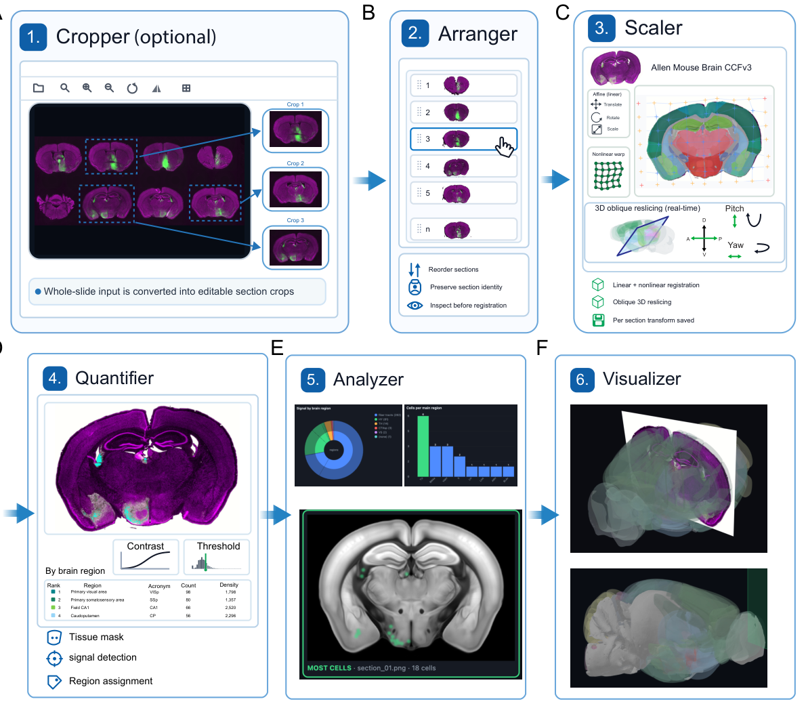
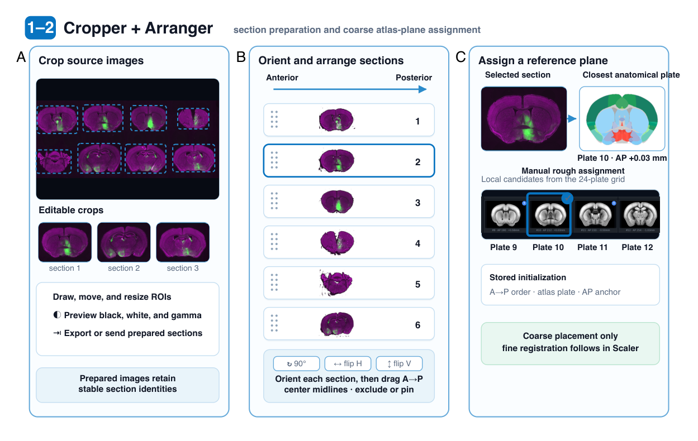
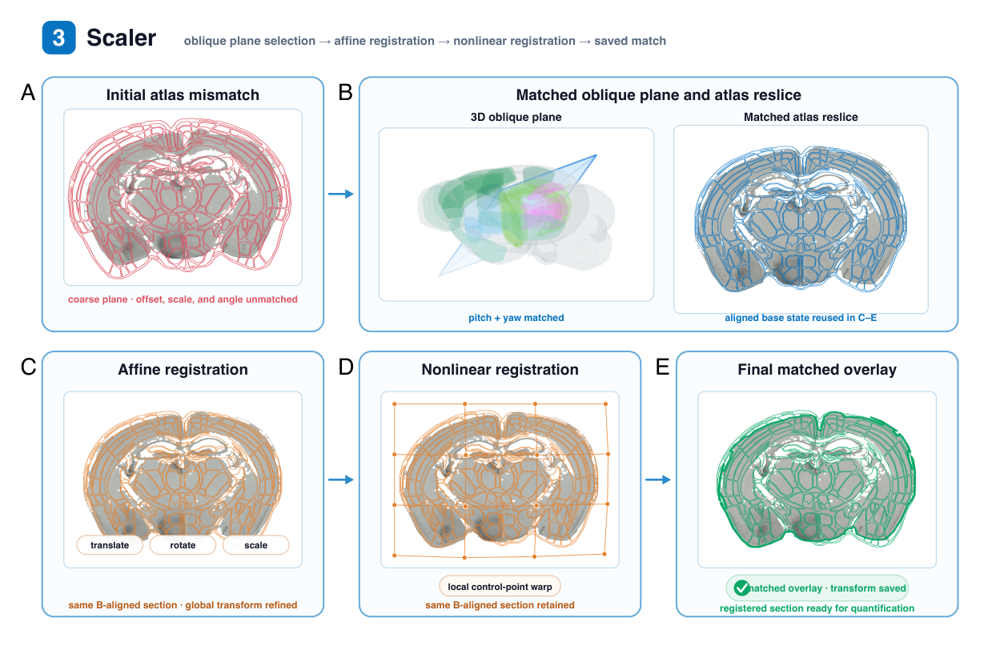
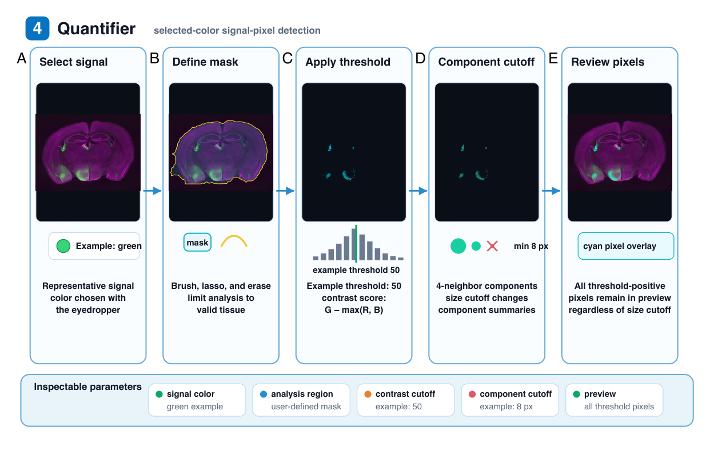
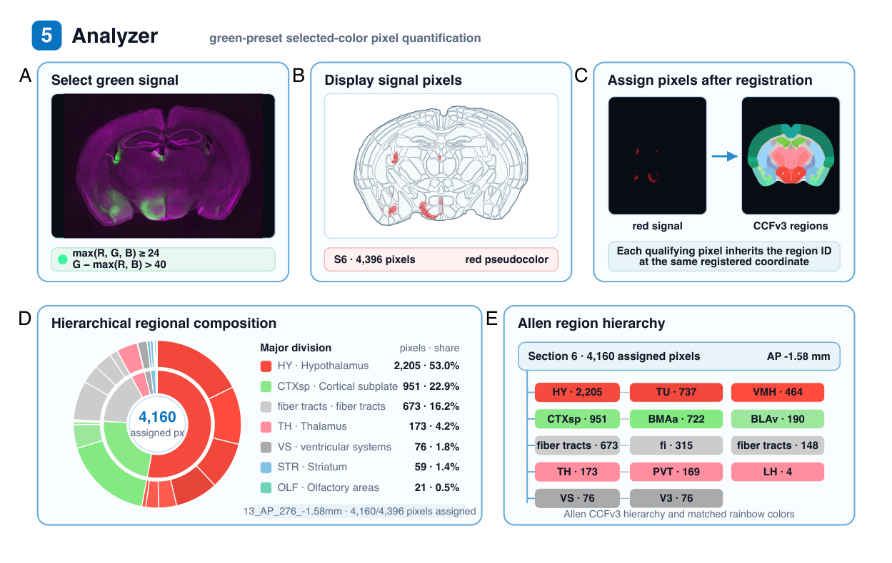
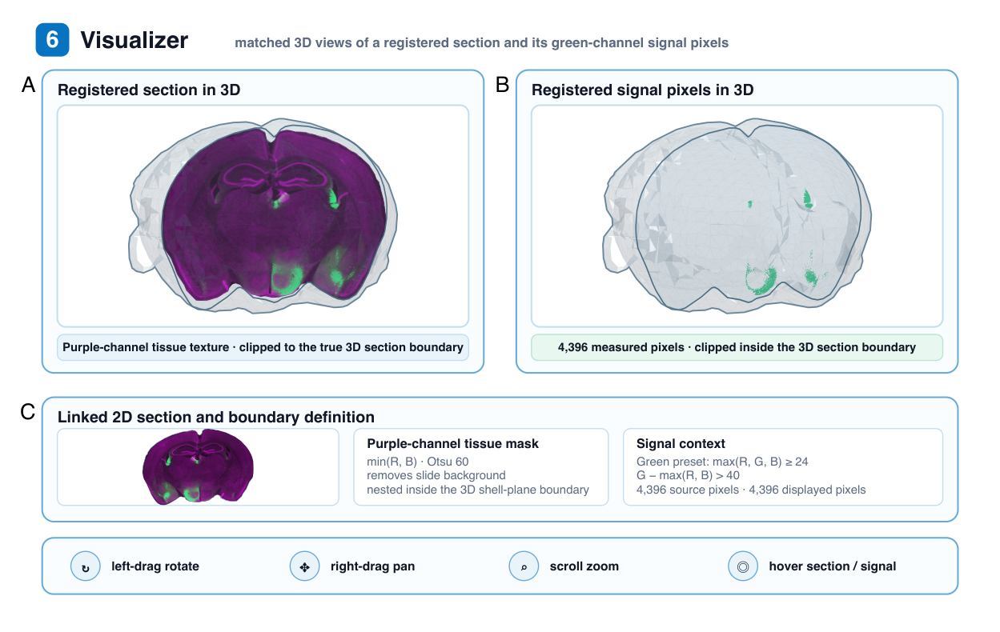

NeuroFlow
A self-contained, browser-based workflow that takes mouse brain sections from raw histology images to region-resolved counts — registering each section to the Allen Mouse Brain atlas and quantifying labeled signal per brain region, entirely on your own computer.

What it does
Mapping histological sections onto a common reference atlas is an essential — but usually fiddly — step in neuroscience: existing workflows are powerful, yet an analysis often spans several programs, operating-system-specific components, or specialized software dependencies. NeuroFlow brings the whole pipeline into a single web page that runs locally in your browser — your images are never uploaded and there is no backend server.
It integrates section cropping, anterior–posterior ordering and coarse atlas-plane assignment, affine and nonlinear registration, real-time 3D oblique atlas reslicing, selected-color signal detection, atlas-based regional quantification, series-level aggregation, and interactive 3D inspection — as one coherent, six-stage pipeline. Major controls and intermediate results stay inspectable throughout, and a project file preserves your section, registration, mask, and result state.

The six-stage pipeline
Cropper · optional
Turn a whole-slide or multi-section source image into clean, editable per-section crops. Draw, move, and resize regions of interest; preview black/white and gamma; and export the prepared sections — each keeping a stable identity so it can be tracked through the rest of the pipeline.

Arranger
Orient each section (rotate 90°, flip horizontally or vertically) and drag them directly into anterior-to-posterior order. Center midlines and exclude or pin sections as needed. Section identity is preserved so you can inspect the series before any registration.
Scaler · registration
Register each section to the Allen Mouse Brain CCFv3. Start from a coarse plane, then dial in anterior–posterior position, pitch, and yaw in a real-time 3D oblique reslice shown side-by-side with the matched atlas plane. Refine with affine transforms (translate, rotate, scale) and then a nonlinear control-point warp for local alignment. Each section's transform is saved.

Quantifier · signal detection
Detect labeled signal by color. Pick a representative signal color by typing it or sampling with the eyedropper, restrict analysis to valid tissue with brush/lasso/erase mask tools, then set a contrast threshold (for green, the score is G − max(R, B)) and a connected-component size cutoff. A cyan preview shows every threshold-positive pixel. NeuroFlow works from source-image pixels only — it does not invent cells or synthetic centroids.

Analyzer · regional quantification
Turn detected pixels into region-resolved numbers. Each qualifying pixel inherits the CCFv3 region label at its registered coordinate, producing a ranked table of regions (acronym, pixel count, density), a two-level sunburst of major divisions and their constituent regions, and an Allen region-hierarchy tree. Results aggregate across the whole section series.

Visualizer · 3D inspection
Inspect the result in 3D. The registered section appears as a clipped plane sitting at its true intersection with the actual Allen CCFv3 whole-brain surface, with the measured signal pixels shown in place and a linked 2D view for full context. Rotate, pan, zoom, and hover to explore.

Highlights
Quick start
Click Launch NeuroFlow, load your section images, and follow the stages left to right — Cropper → Arranger → Scaler → Quantifier → Analyzer → Visualizer. Everything runs in your browser and your images never leave your computer. Questions? Reach out at guangwei.zhang@vcuhealth.org.